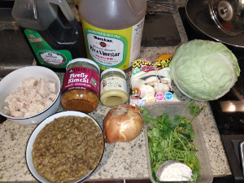
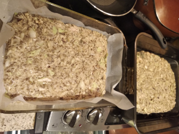
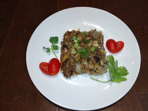
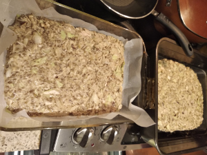
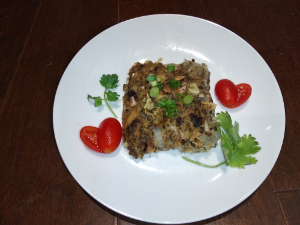

Mung Bean Pancakes

 



Ingredients: * Mung beans, meat or fish (whatever you want), veggies (whatever you want), Kimchi, soy sauce, rice vinegar
How to make it: * Make the mung beans into a soup - instant pot for 30 minutes or on the stove * Cut everything very tiny and bake in the over for 45 minutes at 400 f